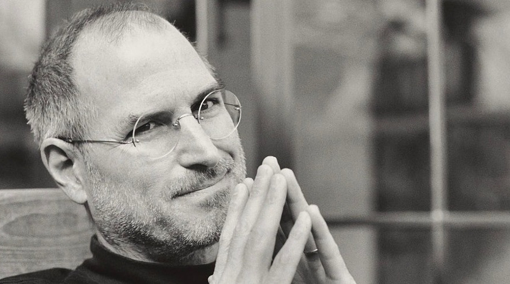

Steve Jobs
1955-2011
Founder of apple
Steven Paul Jobs ( February 24, 1955 – October 5, 2011) was an American business magnate, industrial designer,
investor, and media proprietor. He was the chairman, chief executive officer (CEO), and co-founder of Apple Inc.;
the chairman and majority shareholder of Pixar;
a member of The Walt Disney Company's board of directors following its acquisition of Pixar; and the founder,
chairman, and CEO of NeXT. Jobs is widely recognized as a pioneer of the personal computer revolution of the 1970s
and 1980s, along with his early business partner and fellow Apple co-founder Steve Wozniak.
Jobs was born in San Francisco, California, and put up for adoption. He was raised in the San Francisco Bay Area.
He attended Reed College in 1972 before dropping out that same year, and traveled through India in 1974 seeking
enlightenment and studying Zen Buddhism.
Jobs and Wozniak co-founded Apple in 1976 to sell Wozniak's Apple I personal computer.
Together the duo gained fame and wealth a year later with the Apple II, one of the first highly successful mass-produced
microcomputers. Jobs saw the commercial potential of the Xerox Alto in 1979, which was mouse-driven and had a graphical
user interface (GUI). This led to the development of the unsuccessful Apple Lisa in 1983, followed by the breakthrough
Macintosh in 1984, the first mass-produced computer with a GUI. The Macintosh introduced the desktop publishing
industry in 1985 with the addition of the Apple LaserWriter, the first laser printer to feature vector graphics.

Steve, When releasing iphone